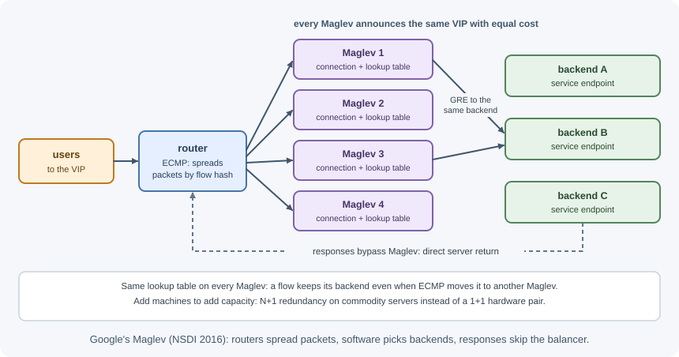

How Top Companies Run at Scale¶
The previous lessons described load balancers, global traffic, multi-region designs, autoscaling, discovery, and resilience patterns in general terms. This lesson looks at how specific companies applied them, using only what they have published themselves: papers, engineering blog posts, and open-source projects. For each case the question is the same: what did they build, and why: what problem made the existing approach insufficient?
The cases cover software layer 4 load balancing (Google's Maglev, Meta's Katran, GitHub's GLB Director, Cloudflare's Unimog), edge gateways, discovery, and load-aware balancing (Netflix's Zuul and Eureka, Dropbox's Robinhood), multi-region active-active operation and region evacuation at Netflix, cells and shuffle sharding (Slack, AWS and Route 53, Shopify), and practicing failure. Two small Node.js programs reproduce the core algorithms (Maglev hashing and shuffle sharding) so you can see why they work.
Why it matters¶
Large-scale architectures are easy to misread as a list of products to copy. The useful part is the reasoning: which limit they hit, what they tried first, and what trade-off they accepted. That reasoning transfers to much smaller systems. You probably do not need a custom packet processor, but you may well need to drain a zone without knowing the root cause, make failover a DNS change instead of a 25-minute boot, keep one tenant's bad request from taking down every tenant, or stop a connection-level load balancer from overloading your slowest servers.
These cases are also standard material in system design and SRE interviews, where "how does Google load balance?" or "what is a cell?" expects an answer grounded in the published designs rather than guesses.
Real-world usage¶
- Google. The NSDI 2016 paper Maglev: A Fast and Reliable Software Network Load Balancer describes the network load balancer that has served Google's traffic since 2008 and provides network load balancing for Google Cloud.
- Amazon. The Builders' Library article Workload isolation using shuffle-sharding explains the technique and how Route 53 uses it, and the whitepaper Reducing the Scope of Impact with Cell-Based Architecture (2023) applies the isolation of Availability Zones and Regions inside a single workload.
- Slack. Slack's Migration to a Cellular Architecture (2023) starts from a specific incident and explains how Slack made each Availability Zone a drainable cell.
- Netflix. Project Nimble: Region Evacuation Reimagined (2018) breaks down why a region failover took about 50 minutes and how pre-started "dark capacity" brought it under 10.
Popular tools and providers: open-source descendants of these designs include Katran and GLB Director themselves, Envoy (which offers a Maglev consistent-hashing load balancer), Zuul and Eureka, Chaos Monkey, and cloud services built on the same ideas (Google Cloud's network load balancing on Maglev, AWS's cell-based services).
How it works¶
Software L4 load balancing on ordinary servers¶
Four companies independently replaced dedicated load balancer hardware, or ECMP alone, with software running on ordinary servers. Their reasons overlap, and the differences are instructive.
Google Maglev. The Maglev paper lists four limitations of hardware network load balancers: capacity limited by a single unit, which could not keep up with Google's growth; only 1+1 redundancy, which did not meet Google's availability requirements; little flexibility to modify them; and costly upgrades that require buying and installing new hardware. Maglev runs on commodity Linux servers. Every Maglev machine announces a service's virtual IP to the routers over BGP with equal cost, so routers spread packets across all of them with ECMP; each machine picks a backend and forwards the packet inside GRE encapsulation, and responses go straight back to the routers (direct server return), so Maglev handles only the smaller incoming traffic. Capacity grows by adding machines, giving N+1 redundancy.

Two mechanisms keep connections stable. A connection table remembers the backend chosen for each recent flow. But when the set of Maglev machines changes (rolling upgrades, failures), ECMP moves flows to a different Maglev that has no entry for them, so Maglev also uses Maglev hashing, a consistent hashing scheme in which every machine builds the same lookup table from the backend list. The paper explains that existing consistent hashing schemes favored minimal disruption over even balance; Maglev hashing deliberately puts even balance first (so backends need not be overprovisioned) while keeping disruption small. The paper also describes bypassing the Linux kernel for packet processing to reach line rate.
Meta Katran. Meta's announcement of Katran (2018) describes a first-generation L4 load balancer built on the Linux IPVS module that served the company for well over four years but fell short on one goal: coexisting with other services on the same machines. Katran rebuilt the forwarding plane with XDP and eBPF so the load balancer can run on the backend servers themselves in Meta's points of presence. The rest of the design follows the same pattern as Maglev: ExaBGP announces the VIPs, switches spread packets with ECMP, a consistent hash of the 5-tuple sends every packet of a connection to the same backend without any state shared between load balancers, IP-in-IP encapsulation lets backends live in other racks, and direct server return keeps responses off the load balancer.
GitHub GLB Director. The GLB Director project, which GitHub uses to serve all traffic from its data centers, starts from a problem with plain ECMP: adding or removing a node disrupts flows, because no per-flow state is stored. Traditional solutions such as LVS store flow state on each director and share it between them. GLB Director stays stateless instead: it hashes each flow (with a variant of rendezvous hashing) to an ordered pair of proxy servers and, through a "second chance" mechanism, uses the state the proxies already hold so that flows can finish on a server that has started draining. Packets are encapsulated in Generic UDP Encapsulation, and responses use direct server return. Draining servers without breaking connections was the point.
Cloudflare Unimog. Cloudflare's post on Unimog (2020) explains that before Unimog it relied on ECMP alone, and lists ECMP's problems: changes in the set of servers cause rehashing that breaks connections, routers limit the size of ECMP groups, and ECMP cannot adjust the share of connections each server receives. Cloudflare needed both: to move servers in and out of service safely, and to balance load accurately across servers of different hardware generations. Unimog runs on the same general-purpose servers that run Cloudflare's services, making every server a load balancer, measures server load to adjust connection shares dynamically, uses XDP, and was, by Cloudflare's own description, strongly influenced by GLB.
| Company | Built | Main reason | Key techniques |
|---|---|---|---|
| Maglev | Hardware LBs could not scale with growth and gave only 1+1 redundancy | ECMP to a software tier, Maglev hashing, connection tracking, GRE, DSR, kernel bypass | |
| Meta | Katran | First generation (IPVS) could not coexist with backends on the same hosts | XDP and eBPF, ECMP, stateless 5-tuple consistent hashing, IP-in-IP, DSR |
| GitHub | GLB Director | ECMP disrupts flows on membership change; avoid sharing flow state | Stateless directors, rendezvous-style hashing to server pairs, "second chance" draining, GUE, DSR |
| Cloudflare | Unimog | ECMP rehashing, group size limits, no dynamic load balancing | Every server balances, load-based connection shares, XDP |
The shared lesson: use ECMP for what routers do well (spreading packets), put the balancing logic in software you control, make flow placement consistent so that any balancer node gives the same answer, and keep responses off the load balancer.
Netflix: an edge gateway and client-side discovery¶
- Eureka (2012). Netflix's announcement explains that in AWS "servers come and go", that AWS did not yet offer a middle-tier load balancer, and that putting mid-tier services behind internet-facing load balancers would have meant giving up security-group protection. Eureka is a registry, and clients balance load across the instances it lists: client-side discovery (see service discovery and service mesh).
- Zuul. Netflix's edge gateway fronts its edge services. The 2018 post Open Sourcing Zuul 2 describes more than 80 Zuul 2 clusters sending traffic to about 100 backend clusters at more than a million requests per second, rebuilt on asynchronous Netty, with features such as HTTP/2, mutual TLS, adaptive retries, and dynamic routing rules used to shard traffic, onboard new services, run load tests on a slice of real traffic, and migrate gradually to new origins.
- Resilience libraries. Netflix's Hystrix popularized circuit breakers and bulkheads; it is now in maintenance mode, with Netflix moving toward adaptive concurrency limits (see resilience patterns across servers).
Dropbox: balancing on measured load¶
Dropbox's Robinhood (deployed in 2020, described in 2024) addresses a problem simple balancing ignores: clients doing round robin over the subset of servers discovery gave them produced quite imbalanced load. Robinhood collects load information from servers and turns it into endpoint weights, delivered through Envoy's Endpoint Discovery Service so both Envoy and gRPC clients do weighted round robin. A PID controller per node steers each node's utilization toward the average. Dropbox reports reducing the fleet size of some of its largest services by 25%, because fewer servers need headroom for imbalance. Unimog's dynamic balancing follows the same logic at layer 4.
Netflix: multi-region active-active and region evacuation¶
Netflix's regional design evolved in steps, each described publicly:
- Isthmus, resilience against a region-wide load balancer outage.
- Active-active across two US regions (2013): every service on the user call path deployed in both regions, with the requirements that services be stateless, use only in-region resources, make no cross-region calls on the user's path, and replicate data asynchronously (Cassandra and EVCache). Users were routed by geography with a roughly even split, DNS was controlled through Netflix's Denominator library across two DNS providers, and Zuul handled misrouted requests and load shedding during traffic shifts.
- Global cloud (2016): members in any region could be served from any region where Netflix was deployed, removing the single European region as a single point of failure.
- Project Nimble (2018): faster evacuation, below.
![Diagram: before Nimble, a region failover took about 50 minutes: about 5 minutes to decide, 3 to 5 minutes to scale up, about 25 minutes for services to start and register with Eureka and load balancers, 10 or more minutes of Zuul tunnels between regions, and about 5 minutes of DNS cut-over; with Nimble it takes under 10 minutes, mostly flipping DNS, because dark capacity, a shadow Auto Scaling group not behind the load balancer and held in Eureka's STARTING state, is already running in the healthy region next to the main group and is made available when users are moved over.](../netflix-region-evacuation.svg)
The Nimble post breaks the old 50 minutes down: about 5 minutes to decide, 3 to 5 minutes to provision, about 25 minutes for services to start (boot, download resources, connect to backends, register with Eureka and load balancers), 10 or more minutes of proxying traffic between regions through Zuul to cover DNS caching and let instances warm up, and about 5 minutes for DNS changes to reach most devices. The insight was that the long poles all happen after the decision. Netflix first considered keeping services permanently scaled high, then chose dark capacity: spare instances already running in a separate shadow group that the load balancers never see and that a shared library keeps in Eureka's STARTING state, so they receive no traffic until an evacuation. Failover then becomes flipping DNS. The post reports going from close to an hour to less than 10 minutes while staying cost neutral. Compare the warm pools and static stability ideas in autoscaling server fleets, and the architecture choices in multi-AZ and multi-region architecture.
Cells, silos, and shuffle sharding¶
Slack. Slack's cellular migration began with an incident review. On 30 June 2021, a network link between Availability Zones in Slack's main US region had intermittent faults; the cloud provider removed it, it came back, and it failed again. Slack asked why a single impaired zone was visible to users at all, and found a gray failure: different components had different views of what was healthy, which is hard to detect and remediate automatically. Rather than try to solve gray failure automatically, Slack built a way for humans to act on it: a button that drains an Availability Zone. Its stated goals were to remove as much traffic as possible from a zone within 5 minutes (Slack's 99.99% availability SLA allows less than an hour of unavailability a year), cause no user-visible errors, drain and undrain incrementally (as little as 1% of traffic to test a recovered zone), and not depend on anything inside the zone being drained. Because Slack's services were written in several languages and used several discovery mechanisms (Envoy xDS, Consul, DNS), it did not change every client; instead it siloed services so that each only receives and sends traffic within its own zone, which makes draining the user-facing entry points enough to drain everything behind them.
AWS: cells and shuffle sharding. A cell is a complete, independent copy of a workload serving a subset of customers; a thin router sends each customer to its cell, so a bad deployment, a poison request, or a runaway customer affects only that cell (see advanced deployment patterns for cell-by-cell releases). Shuffle sharding refines this for shared fleets.
![Diagram: with regular sharding, eight workers form four shards of two, and customer A's poison request crashes shard 2, so every customer on it, 25 percent, is down; with shuffle sharding each customer gets its own pair, A's pair w1 and w4 crashes, customer B with w4 and w7 still has w7, customer C with w2 and w6 is untouched, and with 28 possible pairs only customers with exactly A's pair lose both, about 1 in 28; Route 53 uses 2,048 virtual name servers and gives each domain 4, about 730 billion shuffle shards; cells at AWS, Slack, and Shopify apply the same idea to whole stacks.](../cells-and-shuffle-sharding.svg)
The Builders' Library article works through the arithmetic: eight workers in four shards means a problem customer affects a quarter of the service; giving each customer a pseudo-random pair of the eight workers creates 28 possible pairs, so only customers with exactly the same pair share the full impact, about 1/28, and customers who share one worker keep the other. Route 53 arranges its capacity into 2,048 virtual name servers and assigns every domain a shuffle shard of four, about 730 billion possible shards. The why was attacks: Route 53 hosts many domains, and a DDoS attack on one of them must not take down DNS for everyone else; buying enough scrubbing appliances to protect every domain was estimated at tens of millions of dollars and months of delay.
Shopify pods. Shopify's pods post (2018) explains that in 2015 a single, ever larger database server was no longer possible, so the database was sharded. That gained capacity but lost resilience: code that looped over every shard meant that one shard being down made an action unavailable across the whole platform. In 2016 Shopify introduced pods: a set of shops on a fully isolated set of datastores. Application servers, job workers, and load balancers are shared, but every unit of work (a web request or a background job) talks to exactly one pod, so serving a request only requires that pod to be up. A routing component in the load balancers, Sorting Hat, matches each request to its pod and adds a header that tells the application which datastores to use. Each pod has a pair of data centers, one active and one for recovery, and a tool called Pod Mover can move a pod to its recovery data center in about a minute without dropping requests or jobs, which also makes evacuating a whole data center a matter of moving its pods one at a time.
Practicing failure¶
Netflix's Chaos Monkey randomly terminates instances in production so that teams build services that tolerate it, and the 2013 active-active post lists larger exercises (Chaos Gorilla, Chaos Kong, and split-brain tests) used to verify that whole zones and regions can be lost. Regular evacuation drills are the reason an evacuation works on the day it is needed. Running such experiments safely is covered in chaos engineering and game days.
What the stories have in common¶
| Problem | Pattern | Who |
|---|---|---|
| A pair of load balancer appliances limits capacity and redundancy | Scale-out software load balancing behind ECMP | Google, Meta, GitHub, Cloudflare |
| Membership changes break connections | Consistent hashing everywhere, plus connection tracking or "second chance" | Google, Meta, GitHub, Cloudflare |
| Equal shares overload slower or busier servers | Load-aware, dynamic weights | Cloudflare, Dropbox |
| Instances come and go faster than configuration can follow | Registries and client-side balancing | Netflix |
| Failover is slow because capacity starts after the decision | Pre-started, idle capacity; failover by DNS | Netflix |
| Gray failures inside one zone | Siloed zones plus a human-operated drain | Slack |
| One customer or request can hurt everyone | Cells, pods, and shuffle sharding | AWS, Shopify, Slack |
| Resilience decays without exercise | Chaos experiments and evacuation drills | Netflix |
When to use and when not to use¶
| Your situation | Borrow | Do not copy yet |
|---|---|---|
| One region, a few services | Managed load balancers, multi-AZ fleets, timeouts and retries | Custom L4 balancers, cells |
| Long-lived connections and frequent deploys | Consistent hashing and connection draining (most managed and open-source balancers offer them) | Writing your own forwarding plane |
| Uneven servers or request costs | Least-outstanding-requests or load-aware weights | A PID-controlled control plane, until imbalance costs real money |
| Strict availability targets in one region | Zone silos and a tested zone-drain procedure | Multi-region active-active |
| Large multi-tenant SaaS | Cells or pods by tenant, shuffle sharding for shared fleets | One giant shared database |
| Multi-region already justified | Pre-provisioned capacity, regular evacuation drills | Failover plans that start by booting servers |
These companies built custom systems because nothing available met their scale or constraints at the time. Today, many of their ideas ship in managed cloud load balancers, Envoy, and service meshes; prefer those before building anything yourself.
Practical examples¶
Maglev hashing in Node.js¶
// src/lb/maglev.js
// Maglev hashing (Eisenbud et al., NSDI 2016): every backend gets a preference
// order over the table slots; backends take turns claiming their next free slot.
import { createHash } from "node:crypto";
function hash(text, seed) {
return createHash("sha256").update(`${seed}:${text}`).digest().readUInt32BE(0);
}
export function buildTable(backends, size = 65_537) { // size must be prime
const offsets = backends.map((b) => hash(b, "offset") % size);
const skips = backends.map((b) => (hash(b, "skip") % (size - 1)) + 1);
const next = backends.map(() => 0);
const table = new Array(size).fill(-1);
let filled = 0;
while (filled < size) {
for (let i = 0; i < backends.length && filled < size; i++) {
let slot;
do {
slot = (offsets[i] + next[i] * skips[i]) % size; // i-th backend's permutation
next[i]++;
} while (table[slot] !== -1);
table[slot] = i;
filled++;
}
}
return table.map((i) => backends[i]);
}
export function pick(table, flowKey) {
return table[hash(flowKey, "flow") % table.length];
}
With five backends and the 65,537-slot table (the size Envoy's Maglev balancer also uses), each backend received 13,107 or 13,108 slots in a test run, an almost perfectly even split. Removing one backend changed 13,149 slots: the 13,107 that belonged to the removed backend and only 42 others, so almost every connection to a surviving backend stays where it is. That is the property that lets every Maglev machine compute the same answer independently, with no shared state.
Shuffle sharding in Node.js¶
// src/lb/shuffle-shard.js
// Shuffle sharding: give each customer a small, deterministic, pseudo-random
// subset of workers, so two customers rarely share their whole subset.
import { createHash } from "node:crypto";
export function shuffleShard(customerId, workers, shardSize = 2) {
const ranked = workers
.map((w) => ({ w, score: createHash("sha256").update(`${customerId}|${w}`).digest().readUInt32BE(0) }))
.sort((a, b) => a.score - b.score); // rendezvous-style ranking per customer
return ranked.slice(0, shardSize).map((r) => r.w);
}
// How many distinct shards are possible: n choose k
export function combinations(n, k) {
let result = 1n;
for (let i = 0n; i < BigInt(k); i++) result = (result * (BigInt(n) - i)) / (i + 1n);
return result;
}
combinations(8, 2) returns 28 and combinations(2048, 4) returns
730,862,190,080, the "730 billion" in the Route 53 example. In a test with
1,000 customers on 8 workers, poisoning one customer's pair took out both
workers of 32 other customers (3.2%, close to 1 in 28), while 427
customers lost one worker and kept the other. In production, a client
that tries the second worker when the first fails turns "lost one worker"
into "no impact".
The same deterministic assignment works for cells: hash the tenant ID to pick a cell, store the result in a routing table so tenants can be moved, and route at the edge, as in the cell router example in advanced deployment patterns.
Best practices¶
- Learn the reason behind each design before borrowing the design.
- Keep the data path simple and stateless where possible; move intelligence into control planes that can fail without stopping traffic.
- Use consistent hashing so any node computes the same placement, and plan for membership changes (draining, second chance, connection tracking).
- Balance on measured load when servers or requests differ.
- Pre-provision what failover needs; a plan that boots servers after the decision is slow by design.
- Build generic mitigations (drain a zone, evacuate a region, move a tenant) that work before the root cause is known.
- Limit blast radius structurally: silos, cells, pods, shuffle shards.
- Exercise failure on purpose and regularly.
In production¶
- Connections reset whenever the load balancer tier changes. Detect: resets spike during load balancer deploys or scaling, not during backend changes. Cause: ECMP rehashes flows to balancer nodes without state for them. Fix: consistent hashing that gives the same backend on every node, connection tracking, and gradual draining, as Maglev, Katran, and GLB do.
- One zone's network trouble causes errors everywhere. Detect: errors appear in every zone while infrastructure metrics point at one. Cause: a gray failure plus cross-zone calls in every request. Fix: silo services within zones and build a tested zone-drain control at the entry points, like Slack.
- A region failover takes most of an hour. Detect: drills show long waits for scaling, boot, and warmup after the decision. Cause: destination capacity is created during the failover. Fix: pre-started idle capacity and DNS-based failover, like Nimble.
- One customer's traffic pattern takes down the shared fleet. Detect: an outage begins with a spike or malformed request from a single tenant. Cause: every tenant shares every worker. Fix: cells or pods per tenant group and shuffle sharding for shared tiers.
- A loop over every shard makes one shard's outage platform-wide. Detect: a single database shard failure causes errors for all customers. Cause: code paths that touch all shards per request or job. Fix: assign every unit of work to exactly one shard or pod, like Shopify.
- Newer servers sit idle while older ones overload. Detect: CPU differs widely between instance generations behind the same balancer. Cause: equal connection or request shares on unequal hardware. Fix: load-aware weights or least-outstanding-request balancing, like Unimog and Robinhood.
Important terminology¶
- ECMP (equal-cost multipath): Router feature spreading flows across several next hops with the same cost, using a hash of each flow.
- VIP (virtual IP): An address served by many machines rather than one interface.
- Direct server return (DSR): Responses go from the backend to the client without passing back through the load balancer.
- GRE / IP-in-IP / GUE: Encapsulations used to forward packets from a load balancer to backends in other racks.
- Maglev hashing: A consistent hashing algorithm that fills a lookup table evenly from per-backend preference lists.
- Connection tracking: Remembering the backend chosen for each flow.
- XDP / eBPF: Linux kernel facilities for fast, programmable packet processing.
- Gray failure: A failure that some components see and others do not.
- Silo: A service that only takes and sends traffic within its own zone.
- Cell / pod: An isolated copy of a stack serving a subset of customers.
- Shuffle sharding: Assigning each customer a pseudo-random subset of workers so customers rarely share a whole subset.
- Dark capacity: Running instances held out of service until a failover needs them.
- Region evacuation: Moving all users out of a region, usually by DNS.
Common mistakes and misconceptions¶
- Copying a big company's architecture without its problem or scale.
- Believing these companies avoid failure; their designs assume it and limit its reach.
- Thinking ECMP alone is a load balancer; it spreads flows but breaks them on membership changes and cannot weight by load.
- Treating multi-region as automatically resilient without regular evacuation drills and pre-provisioned capacity.
- Confusing cells with simple sharding: a cell includes the whole stack, not only the database.
- Quoting numbers from these posts as if they were universal; they describe one system at one time.
Revision questions¶
- What four limitations of hardware load balancers did the Maglev paper give, and how does Maglev address each?
- Why do Maglev, Katran, and GLB Director use consistent hashing even though they also track connections or flows?
- What problem with its first-generation load balancer led Meta to build Katran on XDP?
- What two capabilities did Cloudflare need that ECMP could not provide?
- Break down Netflix's old 50-minute failover. Which parts did dark capacity remove, and why is failover then mostly a DNS change?
- Why did Slack choose siloing plus a manual drain over automatic detection of gray failures? What were the drain's design goals?
- With 8 workers and shards of 2, what fraction of customers shares a given customer's entire shard? With 2,048 workers and shards of 4, how many shards are possible?
- What made Shopify's sharded database less resilient than expected, and how do pods fix it?
Further learning¶
- Maglev paper (PDF)
- Katran on GitHub
- Envoy: Maglev load balancer
- Netflix: Eureka announcement
- Zuul on GitHub
- AWS Architecture Blog: Shuffle Sharding: Massive and Magical Fault Isolation
- Google SRE book: Load Balancing at the Frontend
- Next: load balancing and multi-server interview questions and answers. Back to the load balancing and multi-server overview.